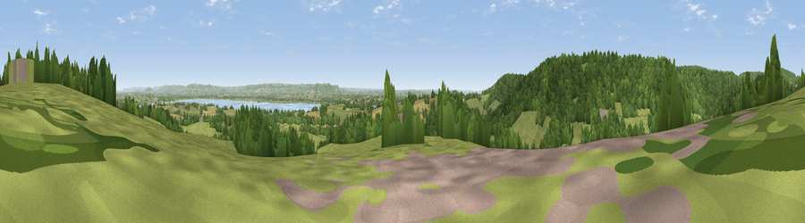

Viewpoint near Blakeney
#11693 in England · top 23% of its area beats it · near BlakeneyThe view, rendered

A 360° render of this exact spot computed from the terrain model, tree cover and land cover — summer colours, afternoon light, calibrated against photographs of famous viewpoints. Real trees, hedges and buildings will differ in detail.
The panorama
Grey silhouette: terrain skyline in each direction (720 bearings, Earth curvature and refraction included). Dashed green: skyline with trees (+15 m) and buildings (+8 m) as obstacles. Blue strip: how far the ground is visible on each bearing.
Where the view opens
Wedge length = distance to the farthest visible ground on that bearing (vegetation-aware). Rings at 10, 25 and 50 km.
What fills the view
47% woodland · 39% grassland · 9% cropland · 4% water · 1% built-up
Angular shares of the visible panorama (visual magnitude), not map area. Landscape diversity 0.48 (0–1 Shannon).
Key numbers
More beautiful places nearby
The staircase of upgrades: each row has a higher view potential than everything closer. Driving times are estimates from straight-line distance, calibrated against real road routing — check an actual route before setting out.
| Place | Direction | Drive | Score |
|---|---|---|---|
| Blakeney Hill | W · 1 km | ~3 min | 65.7 |
| Viewpoint near Viney | SW · 2 km | ~5 min | 69.1 |
| Viewpoint near Yorkley | WSW · 4 km | ~9 min | 70.9 |
| Viewpoint near Littledean | N · 6 km | ~12 min | 73.8 |
| Viewpoint near Ruardean | NNW · 11 km | ~20 min | 74.2 |
| Viewpoint near Stinchcombe | SE · 11 km | ~21 min | 79.4 |
| Viewpoint near Stinchcombe | SSE · 12 km | ~22 min | 80.5 |
| Viewpoint near Woolhope | N · 26 km | ~42 min | 80.7 |
51.76860, -2.47346 · source: screening · position refined by local search. Computed location — check access rights before visiting.